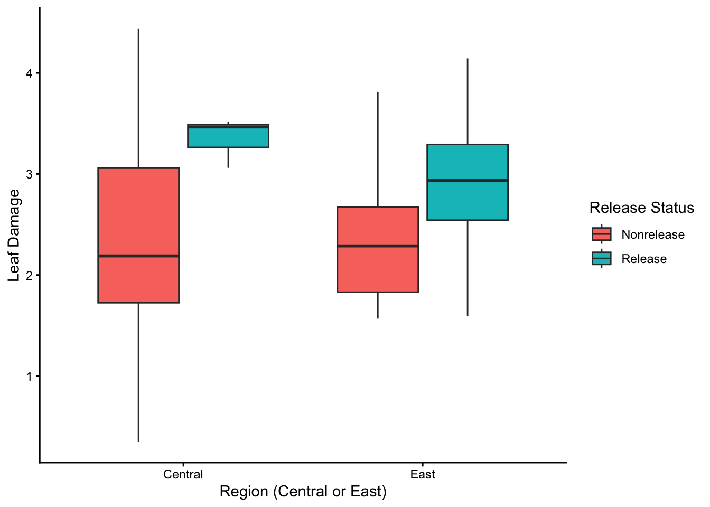
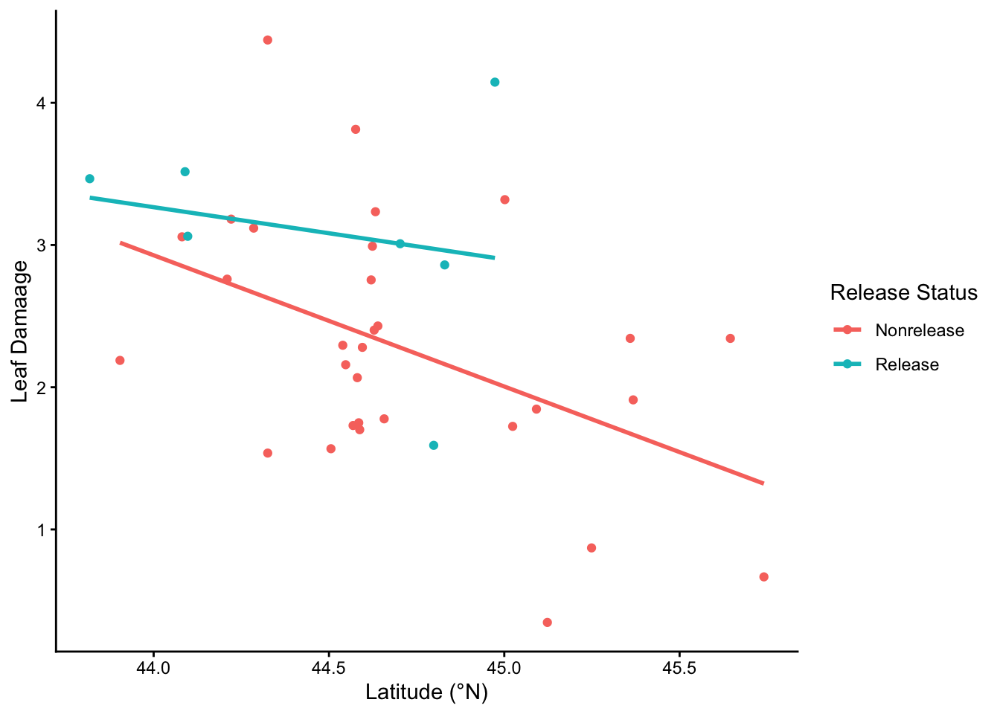
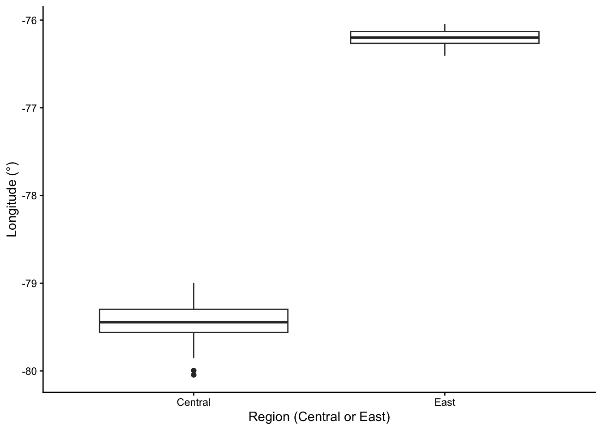

# Name - Queen's Student Number
# 1. Anna Goldfarb - 20455917BIOL343 Coding Challenge 6: Interactions, collinearity and false positives
Group Members
DO THIS FIRST
Copy and paste these two lines into your R Console to install the current positpal, then restart R (Session → Restart R, or the restart button in the Console) before anything else. Do not include them as a code chunk.
install.packages("remotes")
remotes::install_url("https://quantitative.bio/downloads/positpal.tar.gz", upgrade = "never")After the restart, paste this line, replacing FILENAME.Rmd with the name you are going to use for the .R or .Rmd file you are going to upload (rename the template first, e.g. Group_#_CC6.Rmd, and use that exact name):
positpal::start("FILENAME.Rmd")Before you run it: create or open an R project folder for this challenge so that it is your working directory, then save this file in that folder under the name you will upload, and check that autosave is on (File → Auto Save). Closing the laptop or quitting Positron does not lose your log: when you reopen the project folder, positpal picks up where you left off and says so in the Console after your first command. Every time you open Positron to work on this file, run the start() line again, even if positpal says it picked up where you left off; it continues the same log and never erases it. See OnQ and use the positpal chatbot if you are having trouble with positpal.
Part 1 — Import and inspect
The data file is data/loosestrife.csv: one row per stand of purple loosestrife (Lythrum salicaria) in Ontario, with the region, whether Galerucella beetles were released there, the site’s latitude and longitude, three measures of the plants, and the mean beetle damage index. The instructions describe the study, the variables and the three hypotheses. Do not edit the file by hand.
Last week you fitted models with one or two predictors that act additively. This week you will let predictors interact, see what happens when two predictors carry the same information, and count how often a test can be wrong.
As in earlier challenges, the tasks tell you what to produce, not which function to use. The starter lines in some chunks are commented out so that the blank template knits; remove the # as you fill them in.
Import and inspect the data
Import the data as an object called lythrum and check its structure. Then use dplyr to keep only the Central and East sites, save the result as lythrum_ce, and count the sites in each combination of region and release. Use lythrum_ce for the rest of the challenge.
lythrum <- read.csv("/Users/annagoldfarb/Desktop/BIOL343/BIOL343-CC/CC6/data/loosestrife.csv")
dim(lythrum)[1] 52 9str(lythrum)'data.frame': 52 obs. of 9 variables:
$ site : chr "E10.MTALB" "E11.JP" "E12.HWY8.1" "E13.HWY8.2" ...
$ latitude : num 44.2 44.3 44.2 44.3 44.3 ...
$ longitude : num -79.3 -79.4 -79.4 -79.4 -79.2 ...
$ region : chr "Central" "Central" "Central" "Central" ...
$ release : chr "Nonrelease" "Nonrelease" "Nonrelease" "Nonrelease" ...
$ stemsper50m2 : int 191 10 96 86 15 166 30 8 39 26 ...
$ stemheight_cm : num 130 117 101 111 121 ...
$ inflorescences: num 2.15 1.8 3.95 5.9 2.3 ...
$ damage : num 2.76 1.54 3.18 3.12 4.44 ...head(lythrum) site latitude longitude region release stemsper50m2 stemheight_cm
1 E10.MTALB 44.20960 -79.33869 Central Nonrelease 191 130
2 E11.JP 44.32528 -79.37285 Central Nonrelease 10 117
3 E12.HWY8.1 44.22103 -79.44601 Central Nonrelease 96 101
4 E13.HWY8.2 44.28527 -79.44429 Central Nonrelease 86 111
5 E14.HWY48 44.32518 -79.23592 Central Nonrelease 15 121
6 E16.ROG2 44.08084 -79.45420 Central Nonrelease 166 152
inflorescences damage
1 2.15 2.760000
2 1.80 1.537037
3 3.95 3.181818
4 5.90 3.118644
5 2.30 4.441441
6 6.30 3.057554library(tidyverse)Warning: package 'ggplot2' was built under R version 4.5.2Warning: package 'tibble' was built under R version 4.5.2Warning: package 'tidyr' was built under R version 4.5.2Warning: package 'readr' was built under R version 4.5.2Warning: package 'purrr' was built under R version 4.5.2Warning: package 'dplyr' was built under R version 4.5.2Warning: package 'lubridate' was built under R version 4.5.2── Attaching core tidyverse packages ──────────────────────── tidyverse 2.0.0 ──
✔ dplyr 1.2.1 ✔ readr 2.2.0
✔ forcats 1.0.1 ✔ stringr 1.6.0
✔ ggplot2 4.0.3 ✔ tibble 3.3.1
✔ lubridate 1.9.5 ✔ tidyr 1.3.2
✔ purrr 1.2.2
── Conflicts ────────────────────────────────────────── tidyverse_conflicts() ──
✖ dplyr::filter() masks stats::filter()
✖ dplyr::lag() masks stats::lag()
ℹ Use the conflicted package (<http://conflicted.r-lib.org/>) to force all conflicts to become errorslythrum_ce <- lythrum %>% filter(region %in% c("Central", "East"))
lythrum_ce %>% count(region, release) region release n
1 Central Nonrelease 17
2 Central Release 3
3 East Nonrelease 14
4 East Release 4Question 1: How many sites are in each of the four combinations of region and release? Why might the small number of release sites be a problem when you test region and release in the same model?
Answer: There are 17 Central Nonrelease sites, 3 Central Release sites, 14 East Nonrelease sites, and 4 East Release sites. Lower sample size (release sites) of the variable increases the standard error and decreases the accuracy/certainty of model estimates.
Part 2 — Interaction terms
Two categorical predictors
Draw a boxplot of damage by region, filled by release, with axis labels and a clean theme. Calculate the mean damage of each of the four region × release groups. Then fit a linear model of damage with region, release and their interaction as predictors, and print the summary and the ANOVA table.
ggplot(lythrum_ce, aes(x=region, y=damage, fill=release)) + geom_boxplot() + labs(x="Region (Central or East)", y="Leaf Damage", fill="Release Status") + theme_classic()
aggregate(damage~region+release, data=lythrum_ce, mean) region release damage
1 Central Nonrelease 2.202005
2 East Nonrelease 2.369740
3 Central Release 3.347630
4 East Release 2.901369int_mod <- lm(damage~region*release, data=lythrum_ce)
anova(int_mod)Analysis of Variance Table
Response: damage
Df Sum Sq Mean Sq F value Pr(>F)
region 1 0.1232 0.1232 0.1576 0.6939
release 1 3.6977 3.6977 4.7294 0.0367 *
region:release 1 0.5283 0.5283 0.6757 0.4168
Residuals 34 26.5837 0.7819
---
Signif. codes: 0 '***' 0.001 '**' 0.01 '*' 0.05 '.' 0.1 ' ' 1summary(int_mod)
Call:
lm(formula = damage ~ region * release, data = lythrum_ce)
Residuals:
Min 1Q Median 3Q Max
-1.85564 -0.46394 -0.02735 0.51470 2.23944
Coefficients:
Estimate Std. Error t value Pr(>|t|)
(Intercept) 2.2020 0.2145 10.268 5.9e-12 ***
regionEast 0.1677 0.3191 0.526 0.6026
releaseRelease 1.1456 0.5537 2.069 0.0462 *
regionEast:releaseRelease -0.6140 0.7469 -0.822 0.4168
---
Signif. codes: 0 '***' 0.001 '**' 0.01 '*' 0.05 '.' 0.1 ' ' 1
Residual standard error: 0.8842 on 34 degrees of freedom
Multiple R-squared: 0.1406, Adjusted R-squared: 0.06477
F-statistic: 1.854 on 3 and 34 DF, p-value: 0.156Question 2: Using only the estimates in the summary, calculate the mean damage of each of the four groups, and check them against the four group means you calculated at the start of this task. Is the interaction positive (synergistic) or negative (antagonistic), and is it significant? What do you conclude about hypotheses 1 and 2?
Answer: The mean damage for each group alighns with the means calculated at the start of the task. The interaction in negative/antagonistic but is not significant. Hypothesis 1 is not supported because region damage is not significant. Hypothesis 2 is supported because release sites in both regions recieved significantly higher damage.
A continuous and a categorical predictor
Plot damage (y) against latitude (x), coloured by release, with a fitted straight line for each release group, axis labels with units, a legend title and a clean theme. Then fit a linear model of damage with latitude, release and their interaction as predictors, and print the summary and the ANOVA table.
ggplot(lythrum_ce, aes(x=latitude, y=damage, colour=release)) + geom_point() + geom_smooth(method=lm, se=FALSE) + labs(x="Latitude (°N)", y="Leaf Damaage", colour="Release Status") + theme_classic()
lat_mod <- lm(damage~latitude*release, data=lythrum_ce)
anova(lat_mod)Analysis of Variance Table
Response: damage
Df Sum Sq Mean Sq F value Pr(>F)
latitude 1 6.4661 6.4661 9.9852 0.003307 **
release 1 2.1304 2.1304 3.2899 0.078542 .
latitude:release 1 0.3192 0.3192 0.4929 0.487413
Residuals 34 22.0172 0.6476
---
Signif. codes: 0 '***' 0.001 '**' 0.01 '*' 0.05 '.' 0.1 ' ' 1summary(lat_mod)
Call:
lm(formula = damage ~ latitude * release, data = lythrum_ce)
Residuals:
Min 1Q Median 3Q Max
-1.54544 -0.61446 -0.03687 0.44032 1.81369
Coefficients:
Estimate Std. Error t value Pr(>|t|)
(Intercept) 43.5218 14.9103 2.919 0.00619 **
latitude -0.9226 0.3335 -2.766 0.00910 **
releaseRelease -24.1305 35.2608 -0.684 0.49840
latitude:releaseRelease 0.5561 0.7921 0.702 0.48741
---
Signif. codes: 0 '***' 0.001 '**' 0.01 '*' 0.05 '.' 0.1 ' ' 1
Residual standard error: 0.8047 on 34 degrees of freedom
Multiple R-squared: 0.2882, Adjusted R-squared: 0.2254
F-statistic: 4.589 on 3 and 34 DF, p-value: 0.008395Question 3: Write the fitted equation (intercept and slope) for the non-release sites and for the release sites. What does the interaction estimate mean in this model? Is there evidence that the slope of damage against latitude differs between release and non-release sites?
Answer: The Nonrelease site equation is \(y=43.5218-9226x\) and the Release site equation is \(y=19.393-0.3665x\). The interaction estimate means that there is a positive/sychronous relationship between latitude and release. The slope of damage against latitude of 0.5561 less negative at Release sites than at Nonrelease sites, but this is not stastically significant.
Part 3 — Collinearity
Region and longitude
Plot longitude by region. Calculate the correlations among the five continuous columns (latitude, longitude and the three plant measures). Then fit three linear models of damage: one with region as the only predictor, one with longitude as the only predictor, and one with both, and print the three summaries.
ggplot(lythrum_ce, aes(x=region,y=longitude)) + geom_boxplot() + labs(x="Region (Central or East)", y="Longitude (°)") + theme_classic()
cor(lythrum_ce[, c("latitude","longitude","stemsper50m2","stemheight_cm","inflorescences")], use="complete.obs") latitude longitude stemsper50m2 stemheight_cm inflorescences
latitude 1.0000000 -0.13496455 -0.135544862 -0.21992344 -0.363621847
longitude -0.1349646 1.00000000 0.261040033 0.08381715 0.431154673
stemsper50m2 -0.1355449 0.26104003 1.000000000 0.10956873 -0.001909662
stemheight_cm -0.2199234 0.08381715 0.109568730 1.00000000 0.375188489
inflorescences -0.3636218 0.43115467 -0.001909662 0.37518849 1.000000000region_mod <- lm(damage~region, data=lythrum_ce)
summary(region_mod)
Call:
lm(formula = damage ~ region, data = lythrum_ce)
Residuals:
Min 1Q Median 3Q Max
-2.02748 -0.63578 -0.07173 0.68659 2.06759
Coefficients:
Estimate Std. Error t value Pr(>|t|)
(Intercept) 2.3738 0.2069 11.476 1.39e-13 ***
regionEast 0.1140 0.3006 0.379 0.707
---
Signif. codes: 0 '***' 0.001 '**' 0.01 '*' 0.05 '.' 0.1 ' ' 1
Residual standard error: 0.9251 on 36 degrees of freedom
Multiple R-squared: 0.003982, Adjusted R-squared: -0.02368
F-statistic: 0.1439 on 1 and 36 DF, p-value: 0.7066long_mod <- lm(damage~longitude, data=lythrum_ce)
summary(long_mod)
Call:
lm(formula = damage ~ longitude, data = lythrum_ce)
Residuals:
Min 1Q Median 3Q Max
-1.9698 -0.6063 -0.1171 0.7035 2.0934
Coefficients:
Estimate Std. Error t value Pr(>|t|)
(Intercept) 7.15310 7.09886 1.008 0.32
longitude 0.06064 0.09108 0.666 0.51
Residual standard error: 0.9213 on 36 degrees of freedom
Multiple R-squared: 0.01216, Adjusted R-squared: -0.01528
F-statistic: 0.4433 on 1 and 36 DF, p-value: 0.5098both_mod <- lm(damage~region+longitude, data=lythrum_ce)
summary(both_mod)
Call:
lm(formula = damage ~ region + longitude, data = lythrum_ce)
Residuals:
Min 1Q Median 3Q Max
-1.76406 -0.68322 -0.01467 0.64388 1.74902
Coefficients:
Estimate Std. Error t value Pr(>|t|)
(Intercept) 114.3125 50.5528 2.261 0.0301 *
regionEast -4.4719 2.0906 -2.139 0.0395 *
longitude 1.4087 0.6362 2.214 0.0334 *
---
Signif. codes: 0 '***' 0.001 '**' 0.01 '*' 0.05 '.' 0.1 ' ' 1
Residual standard error: 0.8787 on 35 degrees of freedom
Multiple R-squared: 0.1264, Adjusted R-squared: 0.07645
F-statistic: 2.531 on 2 and 35 DF, p-value: 0.09402Question 4: Which two predictors are collinear, and why would you expect that from how the regions are defined? Does your correlation table show it? Compare the estimates, standard errors and p-values for region and longitude across the three models. Why does the model with both predictors find “significant” effects that neither predictor shows alone? Which predictor would you keep, and why?
Answer: Region and longitude are collinear because they are defined by location (East region and Eastern longitudes). The table does not show it because region is categorical. Coefficients and standard error increases when the predictors are combined. I would keep longitude because it is continuous.
Part 4 — False positives and model accuracy
Three tests of hypothesis 3
Hypothesis 3 says that beetle damage reduces the abundance of the plant and changes its growth form. Fit three linear models, one for each plant measure (stem density, stem height and inflorescences) as the response, each with damage as the only predictor, and print the three summaries.
dense_mod <- lm(damage~stemsper50m2, data=lythrum_ce)
summary(dense_mod)
Call:
lm(formula = damage ~ stemsper50m2, data = lythrum_ce)
Residuals:
Min 1Q Median 3Q Max
-2.17446 -0.59241 -0.04907 0.65889 2.09258
Coefficients:
Estimate Std. Error t value Pr(>|t|)
(Intercept) 2.3389358 0.2219742 10.537 1.51e-12 ***
stemsper50m2 0.0006614 0.0012186 0.543 0.591
---
Signif. codes: 0 '***' 0.001 '**' 0.01 '*' 0.05 '.' 0.1 ' ' 1
Residual standard error: 0.9232 on 36 degrees of freedom
Multiple R-squared: 0.008117, Adjusted R-squared: -0.01944
F-statistic: 0.2946 on 1 and 36 DF, p-value: 0.5906height_mod <- lm(damage~stemheight_cm, data=lythrum_ce)
summary(height_mod)
Call:
lm(formula = damage ~ stemheight_cm, data = lythrum_ce)
Residuals:
Min 1Q Median 3Q Max
-2.09378 -0.65239 -0.08039 0.60105 2.01220
Coefficients:
Estimate Std. Error t value Pr(>|t|)
(Intercept) 2.165312 0.861864 2.512 0.0166 *
stemheight_cm 0.002181 0.007051 0.309 0.7588
---
Signif. codes: 0 '***' 0.001 '**' 0.01 '*' 0.05 '.' 0.1 ' ' 1
Residual standard error: 0.9257 on 36 degrees of freedom
Multiple R-squared: 0.002651, Adjusted R-squared: -0.02505
F-statistic: 0.09571 on 1 and 36 DF, p-value: 0.7588inflo_mod <- lm(damage~inflorescences, data=lythrum_ce)
summary(inflo_mod)
Call:
lm(formula = damage ~ inflorescences, data = lythrum_ce)
Residuals:
Min 1Q Median 3Q Max
-1.8702 -0.6270 -0.0549 0.5468 2.2078
Coefficients:
Estimate Std. Error t value Pr(>|t|)
(Intercept) 2.07630 0.28085 7.393 1.01e-08 ***
inflorescences 0.06842 0.04668 1.466 0.151
---
Signif. codes: 0 '***' 0.001 '**' 0.01 '*' 0.05 '.' 0.1 ' ' 1
Residual standard error: 0.9005 on 36 degrees of freedom
Multiple R-squared: 0.05631, Adjusted R-squared: 0.0301
F-statistic: 2.148 on 1 and 36 DF, p-value: 0.1514Question 5: Do any of the three models support hypothesis 3? Suppose damage had no effect at all on any of the three measures. What is the probability that at least one of three independent tests gives p < 0.05 by chance? What does that mean for a study that tests many responses or many predictors?
Answer: None of the models support Hypothesis 3, as none of the measures were significant predictors of damage. The proability of a Type I error in any of the three tests is 14.26%. This is the chance of a statistically significant test result appearing purly by chance from multiple responses and predictors, therefore requiring correction.
How good is a quick field check?
A manager suggests a cheap way to tell whether beetles were released at a site without checking the records: call it a release site if its damage index is 3 or more. Add a column to lythrum_ce with this prediction, and make a table of the predicted against the actual release status. Treating “release” as a positive result, count the true positives, false positives, true negatives and false negatives, and calculate the accuracy, sensitivity, specificity and false discovery rate of the check.
lythrum_ce <- lythrum_ce %>% mutate(predicted=ifelse(damage>=3,"Release","Nonrelease"))
table(Predicted=lythrum_ce$predicted,Actual=lythrum_ce$release) Actual
Predicted Nonrelease Release
Nonrelease 24 2
Release 7 5TPos <- sum(lythrum_ce$predicted == "Release" & lythrum_ce$release == "Release")
FPos <- sum(lythrum_ce$predicted == "Release" & lythrum_ce$release == "Nonrelease")
TNeg <- sum(lythrum_ce$predicted == "Nonrelease" & lythrum_ce$release == "Nonrelease")
FNeg <- sum(lythrum_ce$predicted == "Nonrelease" & lythrum_ce$release == "Release")
accuracy <- (TPos+TNeg)/(TPos+FPos+TNeg+FNeg)
sensitivity <- TPos/(TPos+FNeg)
specificity <- TNeg/(TNeg+FPos)
FDR <- FPos/(TPos+FPos)
c(TruePositive=TPos, FalsePositive=FPos, TrueNegative=TNeg, FalseNegative=FNeg, Accuracy=accuracy, Sensitivity=sensitivity, Specificity=specificity, FalseDiscoveryRate=FDR) TruePositive FalsePositive TrueNegative FalseNegative
5.0000000 7.0000000 24.0000000 2.0000000
Accuracy Sensitivity Specificity FalseDiscoveryRate
0.7631579 0.7142857 0.7741935 0.5833333 Question 6: Report the four rates. Why is the false discovery rate so much higher than you might expect from the accuracy? If the manager’s goal is to find every release site so that it can be monitored, should the check be more sensitive or more specific, and which way would you move the threshold of 3?
Answer: The accuracy is 76.32%, the sensitivity is 71.43%, the specificity is 77.42%, and the false discovery rate is 58.33%. The false discovery rate is high because there are so few release sites, so false positives are more likely despite relatively good accuracy. The check should be more sensitive and the threshold should be lowered, but there will be reduced specificity.
DO THIS LAST
When your document is finished, knit it, open the .html in a web browser and print it to PDF (File → Print → Save as PDF; name it Group_#_CC6.pdf). Then copy and paste this into the R Console to stop positpal and create your coding log. Do not include it as a code chunk.
positpal::stop_capture()
positpal::export_capture()export_capture() prints the name and location of the my-capture-YYYYMMDD-HHMMSS.zip it creates beside this file. Each group member uploads their own .zip to the “CC6 — Coding Log (individual)” dropbox on OnQ; the group’s .Rmd and the .pdf (not the .html — OnQ shows uploaded HTML as source code, not as a page) go to your section’s TUT02-CC6 or TUT03-CC6 folder. Submissions without the log are incomplete. If export_capture() fails, zip the .capture folder yourself and upload that instead.